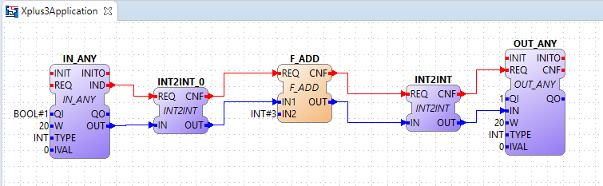
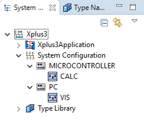
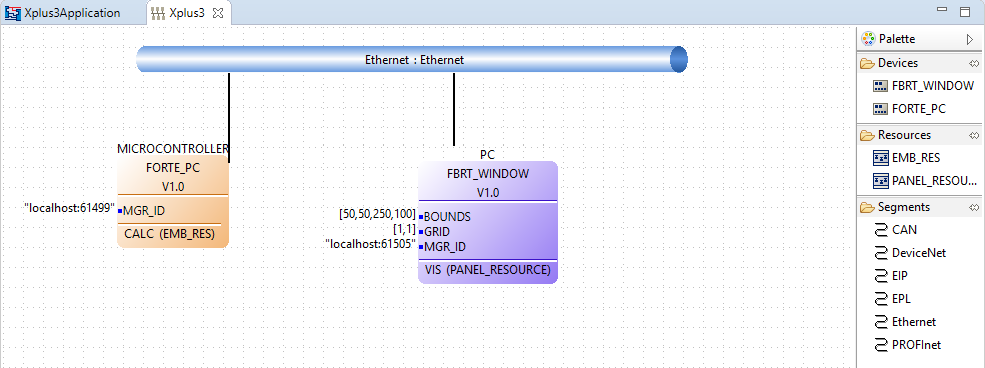
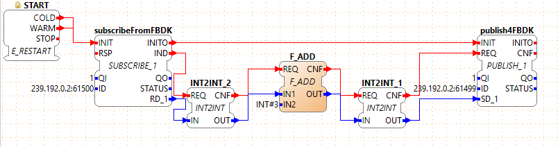
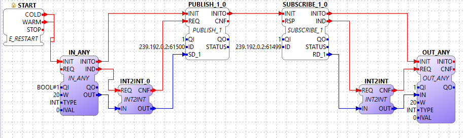
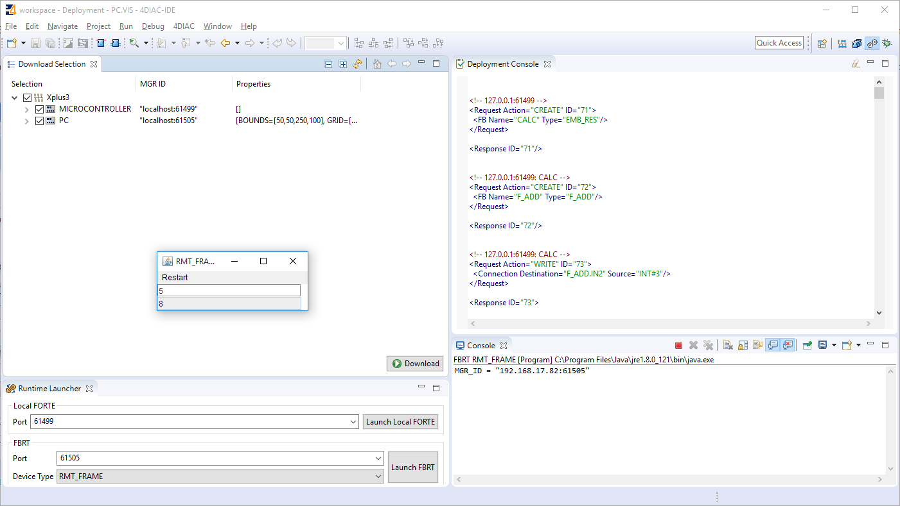

This example gives you an overview of how to work with 4diac by examining and deploying the System Xplus3 and Application Xplus3Application. The System consists of two Devices, after examining the mapping of the Application parts to the Resources, we will set the preferences required and test it.
A IEC 61499 Application is designed independent of Devices and Resources. The Application FBs are mapped to the Resource of a Device they will run on after building the application. Click on the arrow beside the Xplus3 System and double-click to open the Application called Xplus3Application (note: depending on your operating system, a single click may be sufficient where double clicks are mentioned in this tutorial)

There are 3 groups of Function Blocks connected. The specific color of a Function Block shows that this block is mapped to a Device. The two different colors of the FBs indicate that they are mapped to two different Devices, so the Application is distributed. The dashed line connections are just information. We will see how the data is passed between Devices in Resources.
The Applications IOs are on one Device and the calculation (X+3) is on the 2nd Device. Mouse over often provides extra information like a data variable's type. When exploring the Application it can be figured out that there are three types of Function Blocks used
Within the System called Xplus3 there is the System Configuration. Click once on System Configuration (on left) and keep expanding the System Configuration by clicking the arrows on the left. This shows the Devices and Resources used.
Double click on System Configuration to open the System Configuration model that shows the System, the Devices, their Resources and the communication network the Devices are connected to.
There are two Devices connected via an Ethernet segment. You have to know what Devices you are using. Here it is:
Click on the Device name in main window to look at the Device's properties bottom window. It is important to set the property Misc/Profile to HOLOBLOC.
In this System each Device has a Manager and 1 Resource, that Applications can be mapped to. If you have not yet done so, click on the arrow at the left side of System Configuration to see the Devices (MICROCONTROLLER; PC). In the same way, expand the Devices (MICROCONTROLLER; PC) to see their Resource(s). Double-click on the Resource names (CALC, VIS) to see what Function Blocks are mapped to the Resource. For the CALC Resource, it looks like this: System Configuration → MICROCONTROLLER → CALC
And for the VIS Resource, like this: System Configuration → PC → VIS
Note the PUBLISH_1 and SUBSCRIBE_1 Function Blocks that are used to send data between Devices or Resources. The _1 is the number of data items being sent / received. INT2INT is used multiple times. You may ask yourself: Why convert an INT to an INT - isn't that the same thing!?
So, when the output type is ANY and the input type is ANY, how can the actual data type be known? This is why we need a conversion Function Block like INT2INT with ANY input and an actual data type for output. Funtion Blocks using an ANY type for input or output have to tell the Function Blocks the type in and the following Function Blocks the type out. For regular Function Blocks the input type must match its type. Look back at the Application, where all 3 parts Input, Output and calculation appear together. Notice that the Publish and Subscribe Function Blocks used to exchange data between Resources of a Device are in the Resource directly. This makes the Application less cluttered and more clearly understandable.
Switch to the Deployment perspective and set the runtime preferences. The following settings are under . For further details on setting these locations see 4diac-IDE Properties. To run the test, the locations of the IEC 61499 executables for the Devices used are required.
With the preferences set correctly for the IEC 61499 System on the 2 Devices you can now test. Click the Open perspective button on top of the title bar and add Deployment in the perspective window. The Open Perspective button of the Deployment perspective will be found besides the perspective Button
To download and test your IEC 61499 Application:
Go back to Examples index:
If you want to go back to the Start Here page, we leave you here a fast access